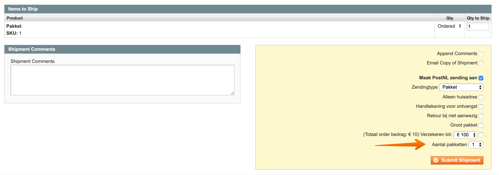

Inleiding
Deze handleiding beschrijft de functionaliteiten van de PostNL extensie en hoe u de PostNL extensie in uw webwinkel kunt installeren.
In deze handleiding beschrijven wij de installatie via SSH/FTP. Mocht u hier hulp bij nodig hebben dan adviseren wij om contact op te nemen met uw technisch beheerder.
Met deze Magento 1 extensie kunt u drie soorten PostNL zendingen aanmaken:
- Pakket zendingen waarbij het mogelijk is om het op te halen bij een PostNL locatie
- Brievenbuspakje
- Ongefrankeerd label
Inhoud
1 Installatie
Wij adviseren de installatie altijd eerst op een testomgeving uit te voeren en een back-up te maken van uw webshop voordat u begint.
1.1 Technische vereisten
Om de PostNL Magento extensie te gebruiken dient uw server aan de onderstaande vereisten te voldoen:
- Minimaal PHP versie 5.6
De onderstaande Magento versies worden ondersteund:
- Community 1.6, 1.7, 1.8, 1.9
1.2 Extensie downloaden
U kunt de extensie op de volgende locatie downloaden:
-
Github PostNL voor de meest recente versie
(Om het zip bestand te downloaden klik onder Downloads op source code.)
1.3 Compiler uitschakelen
Voordat u met de installatie aan de slag gaat is het belangrijk dat de compiler in uw Magento omgeving uitgeschakeld wordt indien deze aan staat. Wanneer u bent ingelogd in uw Magento omgeving kun u de compiler uitschakelen via het menu: Systeem → Hulpmiddelen → Compilatie.
1.4 Mappen & bestanden uploaden
Het .zip bestand bevat twee mappen:
- app
- skin
Upload deze mappen naar uw Magento root.
Er worden geen bestanden overschreven. Als het SSH/FTP programma vraagt of u de mappen wilt samenvoegen of
vervangen kies dan voor de optie samenvoegen.
1.5 Cache legen & opnieuw inloggen
Login op uw Magento beheeromgeving en ga naar het menu Systeem → Beheer cache. Klik op Selecteer alles, kies in het dropdownmenu voor de optie Ververs en klik op de Bevestig button. Klik vervolgens rechtsboven op Uitloggen en log opnieuw in op uw beheeromgeving.
1.6 Cron controleren
De PostNL extensie maakt gebruik van enkele cronjobs. Deze zijn nodig om de statussen van zendingen periodiek bij te werken in uw backend. De extensie haakt in op de cronfunctionaliteit van Magento.
Neem contact op met uw ontwikkelaar als u hier vragen over hebt.
Server cronjob
De wijze waarop uw cronjobs op uw server instelt verschilt per hostingprovider omdat er meerdere webserverbeheer systemen bestaan. Voorbeelden hiervan zijn DirectAdmin, Plesk en Cpanel.
Onderstaand een voorbeeld hoe u in DirectAdmin een cronjob insteld voor Magento.
- Ga naar het account waar de Magento omgeving op draait en klik Cronjobs aan.
- Voor een Magento Community webshop stelt u in dat de cronjob elke 5 minuten geactiveerd moet worden (zoals in onderstaand voorbeeld).
- Controleer met SSH of u de cronjob kunt activeren.
Dit kan door in een terminal venster in te loggen en het command in te voeren. In ons voorbeeld is dat /home/magento/public_html/cron.sh. Dit dien u te doen met root rechten. Mocht dit niet werken of mocht de server geen shell mogelijkheid hebben dan kunt u uitwijken naar het cron.php bestand. In dat geval kun u twee cronjobs aanmaken. U kunt aangeven waar PHP draait voor de opdrachten en de locatie achterhalen met de PHP constante PHP_BINDIR.
Achter de opdrachten moet u een parameter plaatsen:- Opdracht 1: cron.php -malways 1
- Opdracht 2: cron.php -mdefault 1
- Zorg dat de cron.sh (of cron.php) bestand 755 rechten heeft. De server roept nu elke 5 minuten de cron functionaliteit van Magento aan.
- Magento cron
- Ga naar het menu System → Configuration → Advanced → System → Cron (Scheduled Tasks).
- Zorg dat de instellingen gelijk zijn aan onderstaande afbeelding.
2 Configuratie
Ga naar het menu Systeem → Configuratie → Verkoop → PostNL om de PostNL extensie te configureren.
Onder het kopje 'Versie & Support' kunt u zien welke versie van de extensie u gebruikt.
Verder ziet u 2 tabbladen om uit te kiezen. Een tabblad voor de Algemene instellingen en een tabblad voor de checkout instellingen.
2.1 Algemene instellingen
Op het tabblad Algemene instellingen kun u Api instellingen, Basis instellingen en de Standaardverzendinstellingen wijzigen en/of aanvullen naar uw wensen.
2.1.1 API instellingen
Hier kun u uw API Key invullen. Deze zijn nodig om de zendingen door te kunnen zetten naar PostNL.
2.2 Basis Instellingen
Bij dit kopje kun u alle instellingen voor het gebruiken van de PostNL Extensie invullen.
2.2.2 Print oriëntatie
Kies de Print oriëntatie. Als u kiest voor A4 formaat zullen vier verzendlabels per A4 vel geprint worden. Als u kiest voor A6 formaat zijn de verzendlabels geschikt voor het printen met een speciale labelprinter zoals een Zebra of Dymo 4XL.
2.2.3 Track&Trace e-mail template
De Track&Trace mails kunt u vanuit uw Magento shop versturen.
Volg hiervoor onderstaande stappen:
- Ga naar Systeem → Transactionele Emails
- Kies voor de button Nieuw Sjabloon Toevoegen
- Selecteer het sjabloon Verzendings update en kies Laad Sjabloon.
- Geef een naam aan het sjabloon in het veld Naam Sjabloon. Dit is voor intern gebruik.
- Pas de inhoud van het sjabloon naar wens aan. U kunt hiervoor de variabele {{var tracktrace_url}} en {{var retourlabel_url}} gebruiken.
- Om er voor te zorgen dat er alleen tekst wordt getoond wanneer deze variabelen aanwezig zijn, kunt u gebruik maken van {{depend tracktrace_url}} en {{depend retourlabel_url}}.
- Kies voor de button Sjabloon Opslaan.
- Ga naar het menu Systeem → Configuratie → PostNL en vervolgens naar de tab Algemene instellingen.
- Selecteer in de dropdown Track&Trace email template het sjabloon dat u zojuist hebt aangemaakt.
2.2.4 Gebruik PostNL voor alle verzendmethodes
Kies hier voor de optie Ja om alle bestaande verzendmethodes in Magento gebruiken om door te zetten naar PostNL.
Wanneer u deze optie niet wilt gebruiken kiest u voor Nee. U kunt nu de verzendmethoden zelf kiezen welke gebruikt kunnen worden door de PostNL plugin.
2.3 Standaard verzendinstellingen
2.3.1 Standaard verzendopties
Op basis van de ingevulde orderwaarde worden de onderstaande opties geactiveerd. Voorbeeld: Indien u bij Verzekerd tot € 250 bijvoorbeeld de waarde 100 invult, worden orders met een verkoopwaarde boven de € 100 automatisch verzekerd tot een waarde van € 250. Deze logica is voor alle onderstaande opties in te stellen:
- Alleen huisadres
- Handtekening bij ontvangst
- Retour bij niet aanwezig
- Groot pakket
- Verzekerd tot € 100
- Verzekerd tot € 250
- Verzekerd tot € 500
Let op: Op het moment dat 0 ingevuld staat, is de optie niet geactiveerd. Bij invullen van 1 of hoger staat de optie actief.
2.3.2 Douane verzend type
Kies in het dropdownmenu bij het configuratieveld Douane verzend type de optie die bij uw zendingen past.
Dit is een standaard instelling voor 'Rest Of World' zendingen. Wanneer u een zending gaat doorzetten naar PostNL, kunt u dit per zending nog aanpassen. Deze optie vervalt als labels in batch aanmaakt.
Douane goederen HS code
Vul in het veld Douane goederen HS code de gewenste HS code in.
U kunt de codes vinden op deze link: https://tarief.douane.nl/arctictariff-public-web/
Let op: de HS code moet exact vier cijfers zijn.
Dit is een standaard instelling voor 'Rest Of World' zendingen. Wanneer u een zending gaat doorzetten naar PostNL, kunt u dit per zending nog aanpassen. Deze optie vervalt als labels in batch aanmaakt.
Het is ook mogelijk om per productcategorie een eigen HS code mee te geven. Deze optie kun u invullen onderaan de pagina van een gewenste categorie. Ga naar Catalogus -> Beheer categorieën .
2.4 Versturingsmethodes configuratie
Ga naar het menu Systeem → Configuratie → Verkoop → Versturings Methodes → PostNL.
Activeer de versturingsmethode. Kies vervolgens een Titel en een Methodenaam.
2.4.1 Activeer PostNL extensie
Schakel de extensie in door Activeer PostNL extensie op Ja te configureren.
2.4.2 Tarief type
U kunt gebruik maken van twee methodes om de verzendkosten te berekenen:
- Plat: Bij deze methode kun u direct het type en de prijs invullen.
- Tabel: Bij deze methode worden de tarieven uit de Table Rates van Magento gebruikt.
- Ga naar het menu Systeem → Configuratie → Verzendmethodes → PostNL
- Kies bij Tarief type voor Table en bij Voorwaarde een gewenste instelling.
- Schakel de tabel tarieven verzendmethode van Magento zelf uit. Om de verzendmethode van Magento uit te schakelen, volg u Verzendmethode → tarieven prijstabel en zet ingeschakeld op nee.
- Maak een CSV Table Rates bestand. Op deze pagina kun u een CSV genereren: www.elgentos.nl/tablerates.
Tip: Voor gratis verzendkosten vanaf een bepaald bedrag maak u een extra regel aan bij het desbetreffende land. - Zorg ervoor dat u werkt op website niveau links bovenin bij scope huidige configuratie. Hier selecteer u de main website.
- Upload het Table Rates CSV bij de verzendmethode Table Rates. De PostNL extensie gebruikt de Table Rates van Magento zelf.
3 Checkout instellingen
Op het tabblad 'Checkout instellingen' kun u alle gewenste instellingen toepassen die zichtbaar zijn in de checkout. Dit tabblad wordt onderverdeeld in Basis instellingen, Bezorging, Mailbox, Ochtendlevering, Avondlevering, Ophalen en Extra vroeg ophalen
3.1 Basis instellingen
3.1.1 Aantal dagen
Met de functie aantal dagen vooruit kun u aangeven hoeveel dagen vooruit uw klant een levermoment
kan kiezen. Wanneer u kiest voor 7 dagen is laatste keuzemogelijkheid precies 7 dagen later. De dagen
waarop er geen leveringen mogelijk zijn, worden niet weergegeven in de checkout. (zondag en maandag)
In de afbeelding hierboven kun u zien dat er is gekozen om 7 dagen vooruit te laten zien. In de
afbeelding hieronder kun u zien hoe uw klant dit te zien krijgt in de checkout. Er worden in
totaal 5 leverdagen laten zien omdat de zondag en maandag geen leverdagen zijn. Het laatste levermoment
is precies 7 dagen verder.
3.1.2 Laatste bestelmoment
Hiermee kun u instellen tot welk moment het mogelijk is voor u om een bestelling klaar te maken voor levering. Indien u hier tot 16:00 uur instelt, zullen alle klanten na dit tijdstip een latere dag in hun checkout te zien krijgen als eerste levermogelijkheid.
Bijvoorbeeld: U heeft een verwerktijd van 1 dag en kunt tot 16:00 bestellingen verwerken. De bestelling komt binnen op dinsdag 04 oktober om 16:02, de eerst volgende mogelijkheid voor uw klant zou dan donderdag 06 oktober worden. Dit betekent dat u het pakket op woensdag zal inleveren bij een PostNL punt.
3.1.3 Verzenddagen
Bij de verzenddagen kun u invullen op welke dagen het mogelijk is pakketten in te leveren voor collectie op dezelfde dag. In de checkout wordt hier rekening mee gehouden qua keuzes die worden getoond aan uw klant.
3.1.4 Maandag levering
Er kan ook gekozen worden om een pakket op maandag te laten bezorgen, houd er rekening mee dat u bij verzenddagen wel de zaterdag selecteert als verzenddag.
Let op: Maandaglevering is alleen mogelijk wanneer het laatste bestelmoment voor maandagbezorging op 15.30 is ingesteld en zaterdag het pakket voor 15.00 wordt geleverd bij één van de hiervoor bestemde PostNL locaties.
3.1.5 Vertraging
Indien u een langere verwerkingstijd nodig hebt om tot leveren over te gaan kun u dat hier aangeven. Hier zal rekening mee worden gehouden in het tonen van de beschikbare bezorgdagen in de checkout.
3.2 Bezorging
3.2.1 Bezorging titel
U kunt zelf kiezen welke titel u de bezorging geeft. Het advies is om "PostNL" hierin te plaatsen.
3.2.2 Standaard bezorging actief
Met deze instellingen kan u de standaard levering uit zetten. Deze zal dan ook niet in de checkout te zien zijn.
3.2.3 Leeftijdscontrole 18+
De leeftijdscheck is bedoeld voor pakketzendingen waarvoor de ontvanger 18+ moet zijn en dit moet bewijzen door middel van een identiteitsbewijs. Met deze verzendoptie zijn handtekening voor ontvangst en alleen huisadres inbegrepen. De leeftijdscheck is verder uitgesloten van de bezorgopties in de ochtend- en avondlevering.
3.2.4 Alleen huisadres
U kunt hiermee aangeven of uw klanten hier zelf voor kunnen kiezen in de checkout. Indien u dit wilt weergeven in de checkout kies dan voor Ja. Ook is het mogelijk om aan deze optie een eigen naam mee te geven, in het voorbeeld heet deze optie 'Niet bij de buren bezorgen'. Als laatste optie kun u er ook een meerprijs aan koppelen, in het voorbeeld kost deze optie €0.27 extra.
3.2.5 Handtekening voor ontvangst
U kunt hiermee aangeven of uw klanten hier zelf voor kunnen kiezen in de checkout. Indien u dit wilt weergeven in de checkout kies dan voor Ja Ook is het mogelijk om aan deze optie een eigen naam mee te geven, in het voorbeeld heet deze optie 'Handtekening voor ontvangst'. Als laatste optie kun u er ook een meerprijs aan koppelen, in het voorbeeld kost deze optie €0.35 extra.
3.3 Mailbox
Het is mogelijk om automatisch brievenbuspakjes te laten selecteren afhankelijk van de instellingen.
Dit kan op basis van gewicht of volume welke u kunt instellen bij de productgegevens.
Catalog -> Manage products -> Klik op edit
Het is mogelijk om dit te tonen in de checkout waarbij uw klant een keuze heeft. In dit geval zullen er meerdere verzendopties worden getoont, namelijk: Pakket, Brievenbuspakje en indien ingesteld de keuze om op te halen bij een PostNL locatie. Wil u liever niet deze keuze aan uw klant bieden, kun u de titel leeg laten. In dit geval zal er alleen een brievenbuspakje worden aangemaakt bij PostNL maar wordt het gewone tarief berekend.
Wanneer de optie 'Brievenbuspakje tonen met andere opties' op nee wordt gezet dan zal er in de checkout alleen de optie Brievenbuspakje te zien zijn. Dit is vooral handig wanneer er gekozen wordt voor een product dat onder Brievenbuspakje valt en u de klant geen andere optie wil geven.
3.4 Ochtendlevering
Het is mogelijk om uw klanten de mogelijkheid te geven te kiezen voor ochtendlevering (bezorging tussen 08:00 en 12:00). Wanneer u deze optie hebt geactiveerd zal er een extra keuzemogelijkheid verschijnen in de checkout. Daarnaast is het ook mogelijk om een titel mee te geven. Wanneer er geen titel is ingevoerd, dan zullen de bezorgtijden zichtbaar zijn. Tevens is het mogelijk hier een meerprijs aan te koppelen. De prijs die hier wordt ingevuld zal bij het huidige tarief worden opgeteld. Jouw klant ziet in de checkout het totaalbedrag van de zending.
3.5 Avondlevering
Het is ook mogelijk om uw klanten de mogelijkheid te geven te kiezen voor avondlevering (bezorging vanaf 18:00 uur). Wanneer u deze optie hebt geactiveerd zal er een extra keuzemogelijkheid verschijnen in de checkout. Daarnaast is het ook mogelijk om een titel mee te geven. Wanneer er geen titel is ingevoerd, dan zullen de bezorgtijden zichtbaar zijn. Tevens is het mogelijk hier een meerprijs aan te koppelen. De prijs die hier wordt ingevuld zal bij het huidige tarief worden opgeteld. Jouw klant ziet in de checkout het totaalbedrag van de zending.
3.6 Ophalen PostNL locatie Nederland
Met deze optie kunnen uw klanten kiezen om hun pakket bij een PostNL locatie op te halen. Deze locatie kunnen zij zelf kiezen in de checkout. U kunt hier eventueel ook een meerprijs voor rekenen, maar PostNL rekent er geen extra kosten voor.

3.7 Extra vroeg ophalen
Ook voor het ophalen op een PostNL locatie is er een mogelijkheid om dit specifiek in de ochtend te doen (mogelijk vanaf 09:00 in plaats vanaf 16:00). Ook hierbij heb u de keuze om een meerprijs toe te voegen.
3.8 Ophalen PostNL locatie België
Met deze optie kunnen uw klanten kiezen om hun pakket bij een PostNL locatie in België op te halen. Deze locatie kunnen zij zelf kiezen in de checkout. U kunt hier eventueel ook een meerprijs voor rekenen, maar PostNL rekent er geen extra kosten voor.
Winkelaanzicht dichtsbijzijnde locatie
4 Backend functionaliteiten
Om de backend functionaliteiten te kunnen gebruiken dient de PostNL extensie te zijn ingeschakeld.
4.1 Verzending aanmaken
Een PostNL zending aanmaken kan op twee manieren:
1. Batch methode in het bestellingenoverzicht.
- Selecteer de orders die u wilt exporteren naar PostNL
- Kies in de actie balk PostNL - creëer labels
- Kies voor u pakkettype (indien dit conform de keuze van de consument uit de checkout moet zijn, kies dan voor conform type zending) en vervolgens kun u klikken op verstuur
- Kies voor de juiste printpositie, indien u voor A4 hebt gekozen
- Het PDF verschijnt op u computer en is klaar om te printen
2. Per bestelling als u een Magento zending aanmaakt.
- Klik op de desbetreffende order
- Kies rechtsboven voor de knop verstuur
- Rechts onderin verschijnt een geel vak. Hier kan u zowel het verzendtype aanpassen als de beschikbare verzendopties per verzentype.
- Verstuur zending naar PostNL
Het is ook mogelijk om een order in deelleveringen te versturen, bijvoorbeeld wanneer de order in totaliteit te zwaar of te groot is om in één doos te versturen of wanneer een deel van de levering tijdelijk niet voorradig is en u deze later alsnog wil toesturen.
- U kunt hiervoor de order bekijken en rechtsboven kiezen voor Verstuur.
- Pas de hoeveelheid aan bij Items te verzenden en kies rechtsonder voor Stuur verzending.
- U kunt hierna op dezelfde wijze nog een verzendlabel aanmaken voor dezelfde order. Beide verzendingen worden opgeslagen in de order.
4.2 Multi collo zendingen
In het geval dat een zending meer weegt dan het maximum gewicht per pakje. Is het mogelijk om de zending onder te verdelen in meerdere collo. U ontvangt dan meerdere verzendlabels bij 1 Magento zending. Als u de desbetrefende order opend dan kunt u onder Ship de aantal labels aanpassen.
5 Upgraden
Klik hier voor de nieuwste versie van de PostNL extensie.
Om het zip bestand te downloaden klik onder Downloads op source code.
Voor meer informatie over de release notes kun u hier klikken.
5.1 Upgrade stappen
1 Compiler uitschakelen
Schakel de compiler uit indien deze is ingeschakeld.
Dit kan ingesteld worden in het menu Systeem → Gereedschap → Compilatie.
2 Mappen & bestanden uploaden
Het .zip bestand bevat twee mappen:
- app
- skin
Upload deze mappen naar uw Magento installatie.
Als het SSH/FTP programma vraagt of u mappen wilt samenvoegen of vervangen kies dan voor samenvoegen.
3 Cache legen & opnieuw inloggen
Login op uw Magento beheeromgeving en ga naar het menu Systeem → Beheer cache. Klik op Selecteer alles, kies in de dropdown voor Ververs en klik op de Bevestig button.
Klik rechtsboven op Uitloggen en log opnieuw in op uw beheeromgeving.
De extensie is nu geüpgraded.
6 Veel gestelde vragen
6.1 Ondersteunen jullie mijn checkout?
De verzendmethode PostNL maakt gebruik van standaard Magento functionaliteiten. Dit houdt in dat de
verzendmethode in elke checkout die volgens de Magento richtlijnen is opgebouwd werkt.
PostNL 'Ophalen op een PostNL locatie' wordt ondersteund voor de onderstaande checkout extensies:
- OnePageCheckout, dit is de standaard checkout van Magento.
- IWD checkout
- Idev OneStepCheckout, deze kan u aanschaffen op www.onestepcheckout.com. Let op, u dient nooit 'Ophalen op een PostNL locatie' als default verzendmethode in te stellen.
- Fire Checkout (support vanuit Fire Checkout)
6.2 Ik gebruik een postcode check extensie, is dat een probleem?
In principe is het mogelijk een postcode check extensie te gebruiken in combinatie met de PostNL Magento extensie.
6.3 Hoe kan ik gratis verzendkosten instellen?
Naast de Table Rates kun u ook gratis verzendkosten instellen via Promoties > Winkelwagen prijsregels.
- Klik rechts bovenin op Nieuwe regel toevoegen.
- Bij Regelgegevens geef u de regel een naam (voorbeeld: ‘gratis verzenden vanaf 50’). Zet de statusop actief en kies bij websites en klantengroepen alle opties.
- Klik links boven op Voorwaarden en schrijf zelf de regel door op + te klikken. (voorbeeld: Subtotaal gelijk aan of groter dan 50)
- Ga naar de volgende stap acties en geef bij gratis verzending aan Alleen voor betreffende artikelen.
- Klik rechts bovenin op opslaan.